Failed cups, small breakthroughs, and the slow work of getting a moment right. Written as it happened.
everything below happened. the raw pages live in the lab →
Entry 01 · April 2026
Where this started
One moka pot, a kitchen counter, and a suspicion: the best cup of the day was never about the coffee. It was about the five minutes the coffee gave — the smell before the sip, the way the morning changed shape afterward.
Could that shift be designed on purpose? The question turned into a scale, a notebook, and more experiments than anyone would admit to.
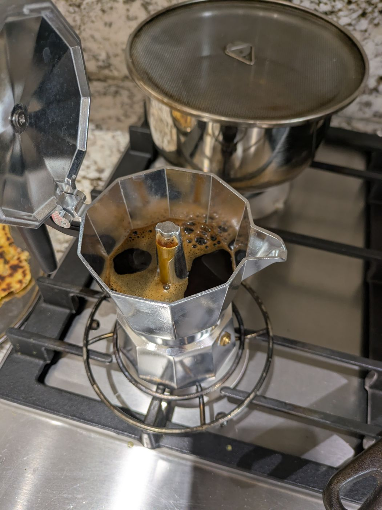
the first brews — enthusiasm, no method
What changedA hobby became a hypothesis: every cup should move you from one state to another, deliberately.
Entry 02 · May 2026
The day everything tasted like cardamom milk
Early Rukh had a pattern. In the jar, the beans smelled like a promise. Then milk, jaggery, and cardamom walked in — and the coffee left without saying goodbye. Cup after cup of expensive cardamom milk.
"Spiced masala," said the house's toughest critic, sliding a cup back across the counter. She wasn't wrong. The lesson outlasted the embarrassment: aroma has to survive the recipe. A bean that vanishes in company is the wrong bean, whatever the roaster's card promises.
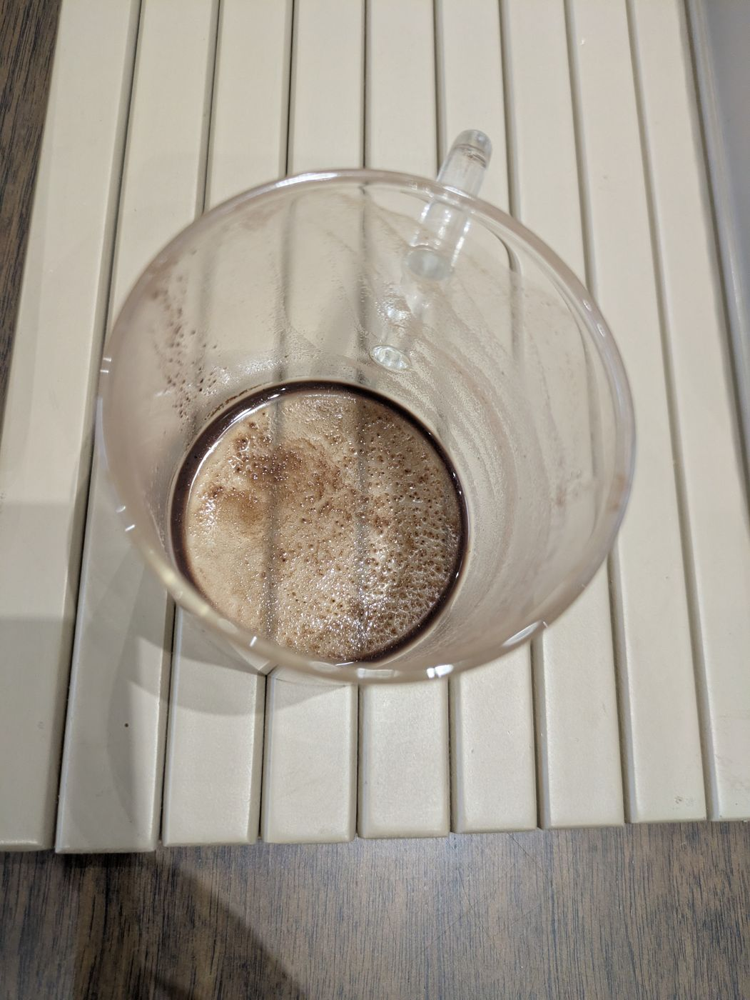
A vs B — one question per session
What changedEvery bean audition since gets one test first: does it still announce itself after everything else joins?
Entry 03 · May 2026
Steep, strain, and suddenly — whiskey and dark chocolate
Kisse was drifting. Then one evening, instead of brewing, I steeped the grounds like tea and strained the cup. My wife took one sip and said, "whiskey and dark chocolate." She'd never described any previous version with anything close to that kind of wonder.
Nothing in the recipe had changed. Only the method. That evening decided how every StateShift cup would be made — steeped slowly, strained clean — and eventually became the two sachets in every box today.
The notebook · May 24"steep & strain. her words: whiskey and dark chocolate. method confirmed."
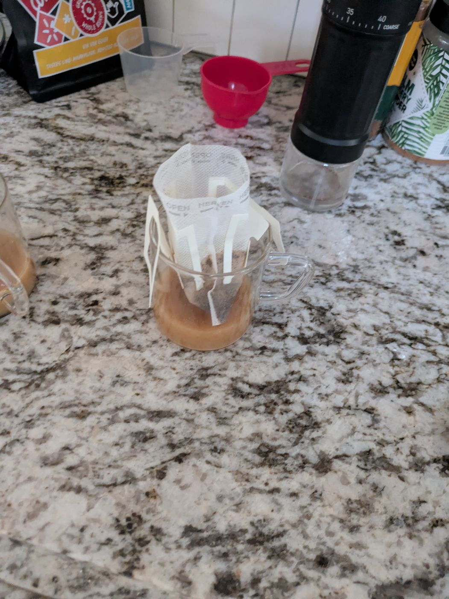
the method that changed everything
What changedPreparation isn't downstream of the recipe. It is the recipe.
Entry 04 · May–June 2026
A match-head of mace
Kisse needed mystery — something people could feel but not name. Cinnamon failed loudly; a guest identified it in one sip and the spell broke. Vanilla failed quietly; it never showed up at all. Then came mace, at a dose the size of a match-head.
Testers began describing "something in the throat" they couldn't place. One sister-in-law sat with the cup, searching for the word, and never found it. That unnameable warmth is now Kisse's signature — and the reason we weigh ingredients to a tenth of a gram. Three pinches instead of one turns intrigue into masala soup. We know. We tried.
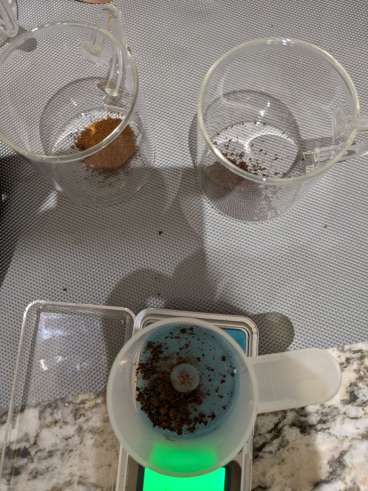
the 0.1g scale — non-negotiable
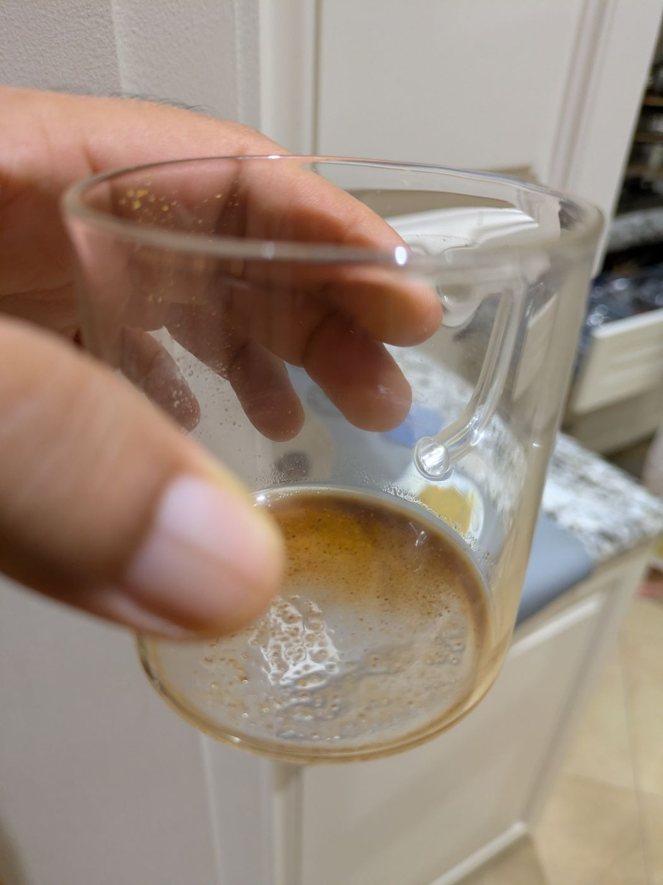
kisse, behaving itself
What changedThe best ingredient is the one nobody can find. Mystery is a dosage problem.
Entry 05 · June 2026
Five beans walked in. One walked out.
The verdicts fell like dominoes across the tasting weeks. "Watery.""Premium — but nothing special.""Burnt." Five single-estate candidates, head-to-head, same recipe, same water, same grind — and four of them politely shown the door.
One bean produced character every single time: dark, complex, with a latent citrus note that cocoa somehow unlocks. The others weren't bad coffees. They were the wrong personalities for a cup about intrigue.
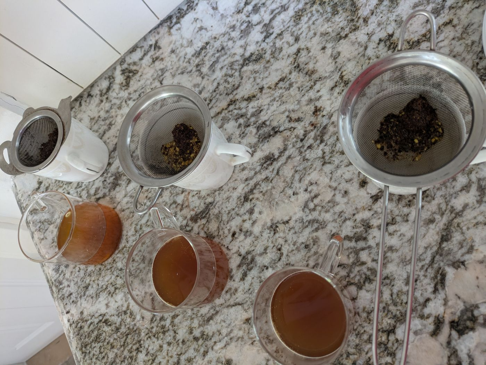
the audition lineup, judged blind
What changedRepeatability beats first impressions. A bean gets locked only when it wins repeatedly.
Entry 06 · June 2026
The 120ml rule (or: change one thing at a time)
Some sessions failed not because of ingredients but because of me. I once changed the water volume and the steep time together — and learned nothing, because when the cup turned bitter I couldn't say which change did it. Another session was invalidated by a cup that smelled faintly of dish soap. The log entry just says: confound — shampoo on cup.
Out of those embarrassments came the house rules — and the notebook keeps them better than memory does.
House rules, as written"120ml is the floor. 3 minutes, exactly. one variable per session. log everything — especially the invalid ones."
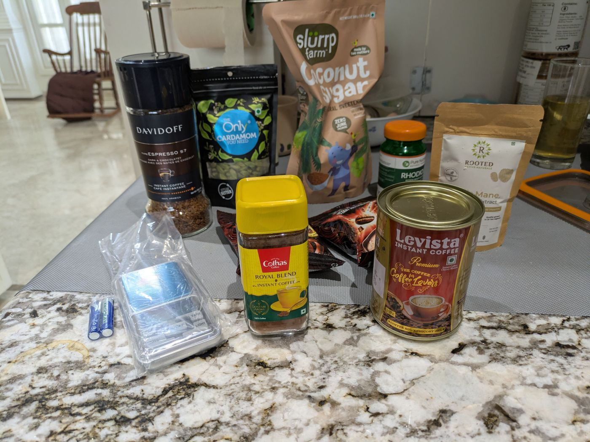
research, as it actually looks
What changedDiscipline in method is what makes any of the results worth trusting.
Entry 07 · June 2026
Making orange peel from actual oranges
Store-bought orange powder smells like nostalgia for an orange. Sehar deserved the orange itself. So: fresh fruit, a peeler, a mixer, and an oven moonlighting as a drying rack.
The kitchen smelled incredible for two days. The powder is brighter than anything money could buy, and it holds a permanent place in the morning cup.
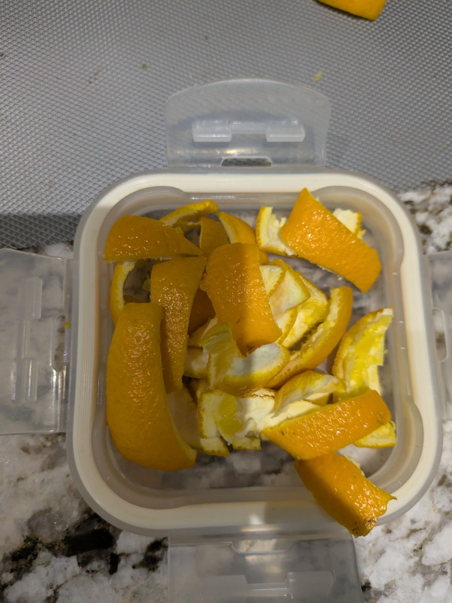
peel, meet mixer
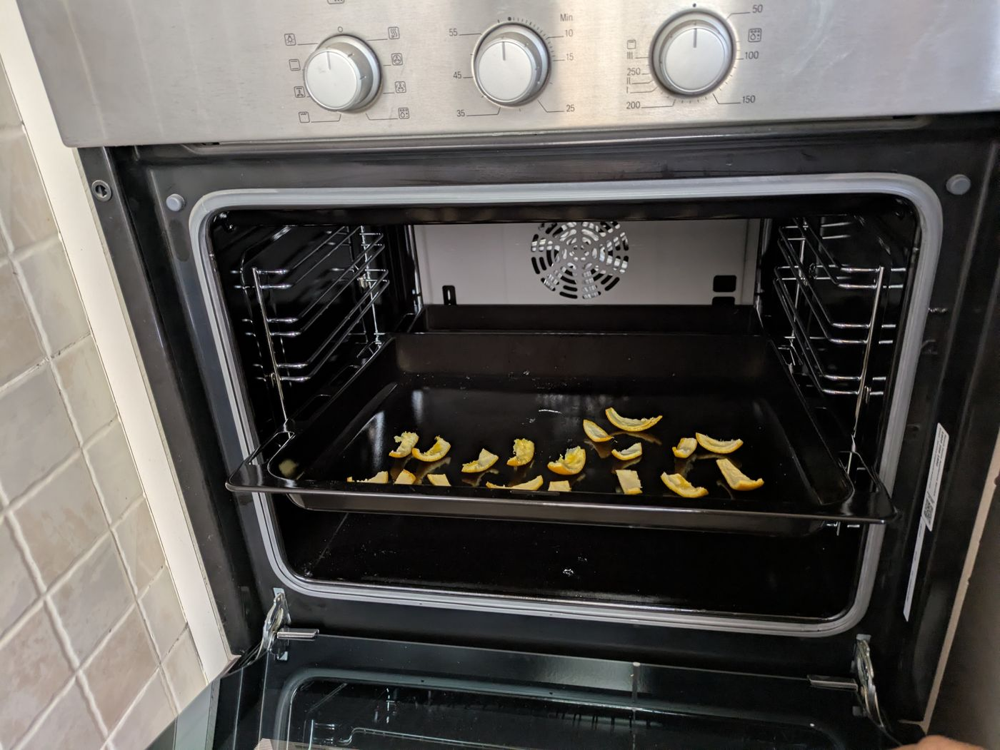
the oven, moonlighting as a dehydrator
What changedIf an ingredient matters, make it. Freshness is a flavour.
Entry 08 · July 2026
Two sachets, one clean cup
The last problem was the hardest: how does anyone brew this at home without a grinder, a scale, and a strainer? The answer became two sachets — one that dissolves, one that steeps.
Sehar, Rukh, and Kisse all brew this way now: clean, aromatic, none of the bitterness that haunted the early versions. The recipes are locked; consistency and shelf life are what's on the bench today. Lamhe is one hazelnut away from joining them.
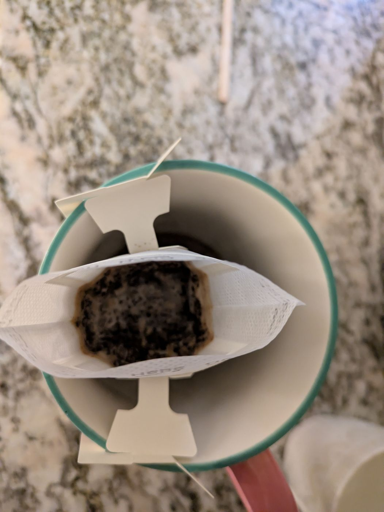
the two sachets at work
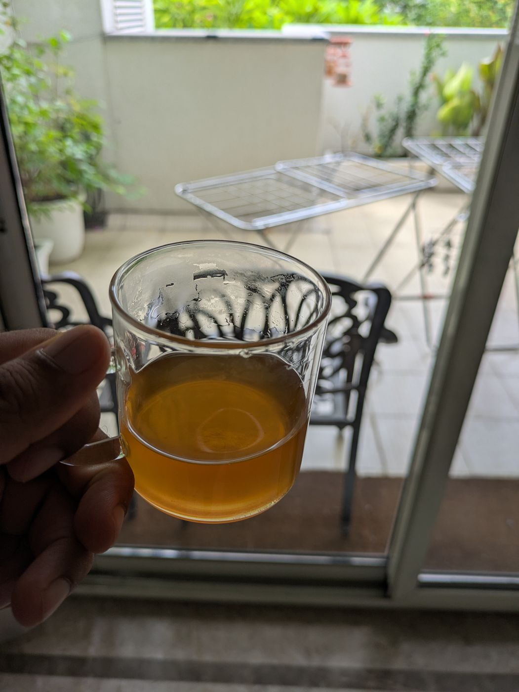
july — a locked recipe, enjoyed slowly
What changedThe product finally matches the philosophy: a pause anyone can hold in two hands.
Go deeper
Every session behind these stories is logged
Grind settings, water volumes, verdicts, failures — the raw record lives in the lab.